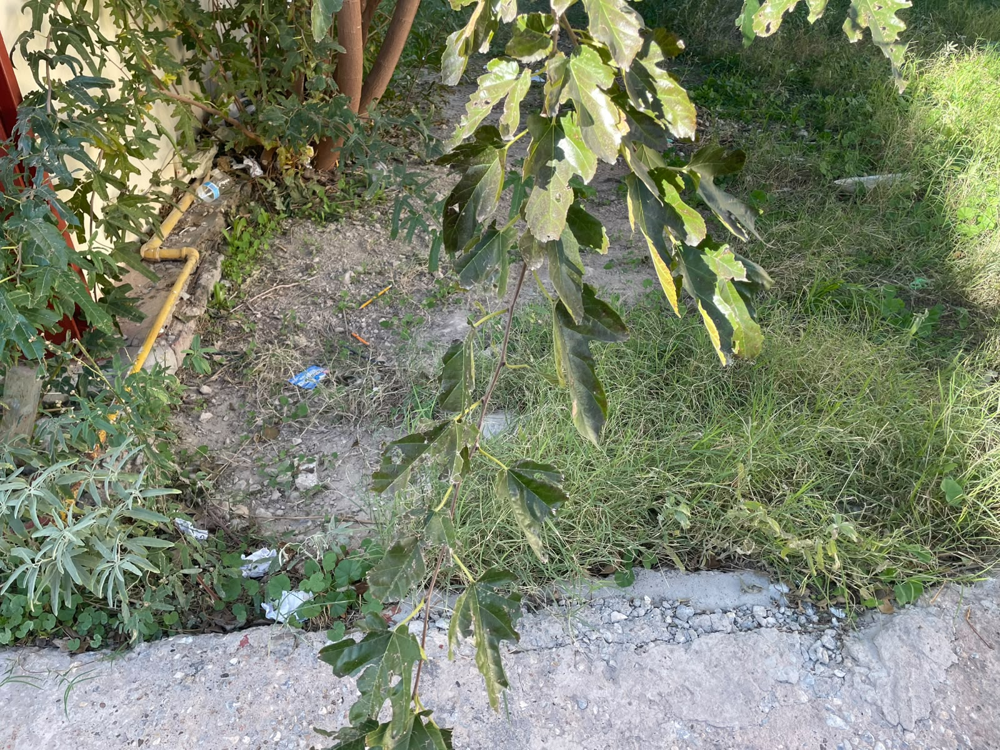
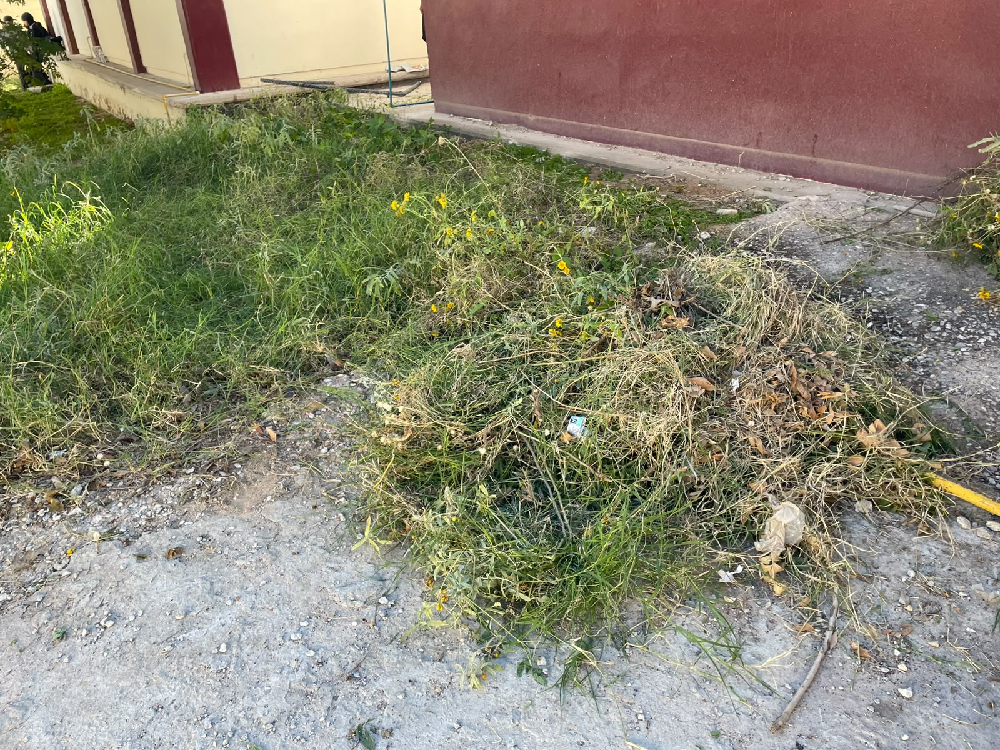

EL RECICLAJE EN NUESTRA COMUNIDAD
El impacto de nuestras acciones no termina al salir del plantel. En las colonias y calles que rodean nuestra escuela enfrentamos retos importantes en el manejo de residuos urbanos que requieren la participación de vecinos y estudiantes.
PROPONER ACTIVIDAD
LUGARES QUE REQUIERAN LIMPIEZA DE FORMA GRUPAL
Detección de zonas contaminadas y descuidadas en la secundaria que se asigno.

PARTICIPACIÓN DE LA ESCUELA A LIMPIEZA
Limpieza que se realizó a diferentes sitios, en nuestro caso a la secundaria fed. 7.
DIAGNÓSTICO EN LA COMUNIDAD
QUÉ RESIDUOS SE GENERAN
En los hogares y comercios cercanos se generan bolsas plásticas, envases de vidrio y plástico, cajas de cartón, restos de comida, podas de árboles, llantas viejas y aparatos electrónicos descompuestos.
DÓNDE SE ACUMULA MÁS BASURA
Se acumula principalmente en lotes baldíos, esquinas donde pasan los camiones recolectores, parques públicos sin vigilancia, alcantarillas y arroyos cercanos a las viviendas.
QUÉ PROBLEMAS EXISTEN ACTUALMENTE
Presencia de tiraderos clandestinos, bolsas rotas por animales callejeros que dispersan la basura con el viento, obstrucción de drenajes en temporada de lluvias y falta de cultura de reciclaje familiar.